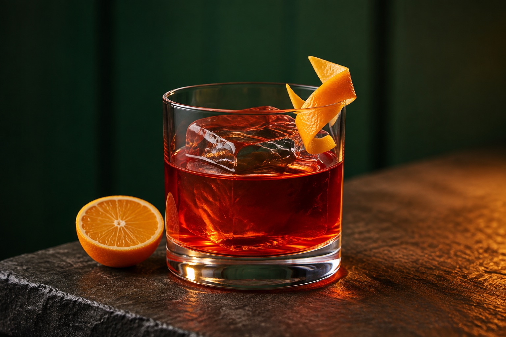
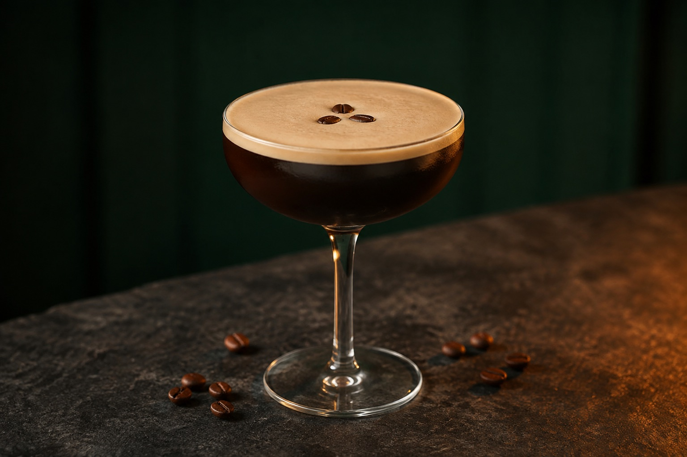

THE ART OF A GOOD DRINK
קוקטיילים קלאסיים,
בבית שלכם.
המרכיבים, המידות והרגע שבו הכול מתחבר.
כל מה שצריך בשביל הטוויסט הראשון שלכם.
TWIST — MAKE IT YOURS
מתכון ברור. מרכיבים מדודים. מקום לטעם שלכם.
THE CLASSICS / 01—03
שלושה להתחיל מהם.
הרענן, המריר והקפה. בחרו את האופי שמתאים לערב שלכם.

01 / רענן · הדרי · מבעבע
מוחיטו
רום לבן, ליים ונענע. התחלה רעננה שמכינים ישר בכוס.
למתכון המלא
02 / מריר · הדרי · עשיר
נגרוני
ג׳ין, קמפרי וורמוט אדום. שלושה מרכיבים בחלקים שווים.
למתכון המלא
03 / קפה · קטיפתי · מתקתק
אספרסו מרטיני
וודקה, אספרסו וליקר קפה. ניעור אחד ושכבת קצף עדינה.
למתכון המלאYOUR FIRST HOME BAR
מתחילים מכוס אחת.
למתכון הראשון שלכם לא צריך בר שלם. למוחיטו מספיקים כוס גבוהה, כלי למדידה וכף ארוכה. אספו את המרכיבים, פנו מעט מקום והתחילו לפי הסדר.
מכינים את הבר הביתי